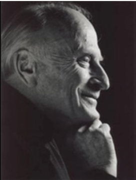

Col D. Jacir remembers Yehudi Menuhin meeting the Free French Air Force.
In 1943, during a lull in the London bombings, Yehudi Menuhin, with his great friend the film star Leslie Howard visited Queensbury Way, where the Headquarters of the Free French Air Force were currently occupying the premises of a school.
Paris Branch
Members' stories
They were welcomed by General Martial Valin
who introduced them to survivors of the torpedoing off Freetown which
had cost the lives of several airmen from the Groupe Lorraine who were
making their way from Libya to London in order to regroup there. To the
delight of General Valin and all those present, Yehudi Men 
It was a memorable evening for all those who shared it with the great violinist and his memorable friend. Leslie Howard. Leslie had just finished Anthony Asquith's film version of Shaw's "Pygmalion". He was later killed while flying from Portugal to Britain.
Yehudi Menuhin was only 26 at the time of this impromptu concert but he had already made his mark in the world of music. He knew, however, exacly how to adapt his talents to the tastes of this group of young people whose future was one of risk and uncertainty. Indeed his modesty never deserted him for there are many like examples of his generosity and this brief note is by way of a memorial to the simplicity and spontaneity of a great humanist.